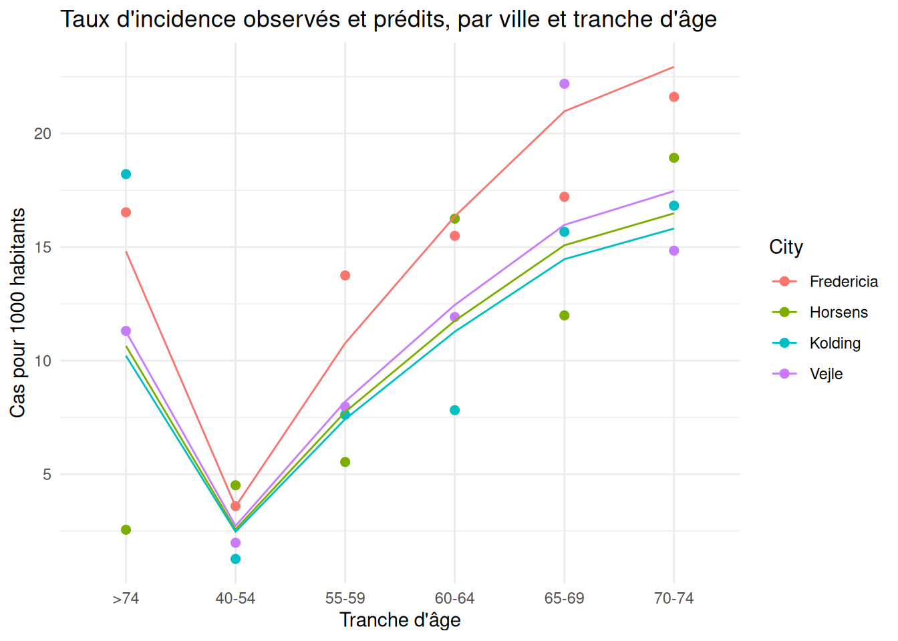
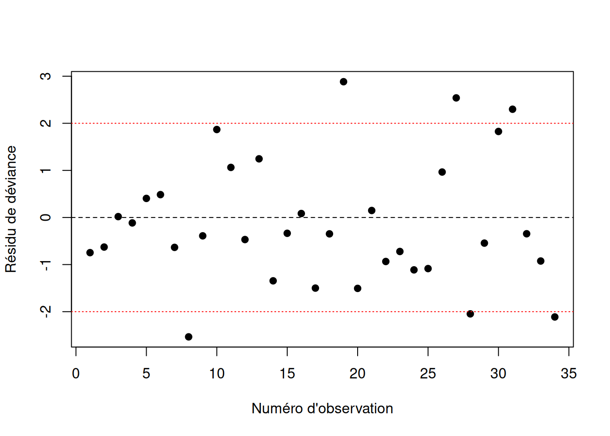

La régression linéaire et la régression logistique partagent plusieurs concepts : inférence sur les coefficients \(\beta\), sélection de modèles, diagnostics. Ce chapitre en donne une présentation unifiée : on suppose que la loi de la variable réponse appartient à la famille exponentielle, qui inclut notamment les lois normale, de Bernoulli, binomiale, de Poisson et gamma. Les régressions linéaire et logistique, vues aux chapitres précédents, en sont donc des cas particuliers.
3.1 Famille exponentielle
3.1.1 Définition
Définition — Famille exponentielle
La loi de la variable aléatoire \(Y\) appartient à la famille exponentielle si sa fonction de probabilité (densité si \(Y\) est continue, fonction de masse si \(Y\) est discrète) s’écrit
où \(\theta\) est le paramètre canonique et \(\phi\) le paramètre de dispersion. La fonction \(b(\cdot)\) est appelée fonction cumulante.
Cette écriture peut sembler abstraite au premier abord, mais elle a l’avantage de regrouper sous un même formalisme des lois qui semblent, à première vue, très différentes (continues ou discrètes, bornées ou non). Une fois qu’une loi est mise sous cette forme, on peut en déduire directement son espérance et sa variance, sans repasser par le calcul habituel des moments.
Remarque — Forme canonique générale
La forme utilisée ci-dessus est celle adaptée aux GLM, où \(\phi\) apparaît explicitement comme diviseur. En statistique mathématique, on rencontre plus souvent une écriture encore plus générale, sans référence à \(\phi\) :
où \(h(y)\) ne dépend pas de \(\theta\), \(c(\theta)\) est une constante de normalisation ne dépendant pas de \(y\), et les \(t_k(y)\) sont des statistiques suffisantes associées aux paramètres naturels \(w_k(\theta)\).
Dans le cas à un seul paramètre naturel (\(K=1\)), avec \(t_1(y) = y\), cette écriture se réduit à
On retrouve la forme du chapitre en posant \(w(\theta) = \theta/\phi\) et \(A(\theta) = b(\theta)/\phi\) : le paramètre de dispersion \(\phi\) se trouve alors absorbé dans le paramètre naturel et dans \(h(y)\) plutôt que d’apparaître séparément. Cette forme rappelle en particulier que \(Y\) est une statistique suffisante pour \(\theta\) dans un GLM, puisque \(t(y)=y\).
Propriété — Moments d’une variable de la famille exponentielle
Si \(Y\) appartient à la famille exponentielle, alors
où \(V(u) = b''\!\left[(b')^{-1}(u)\right]\) est appelée fonction de variance.
Pour aller plus loin avec la théorie — Calcul de tous les moments par la fonction génératrice des cumulants
La propriété précédente ne donne que le premier moment et la variance. On peut en fait obtenir tous les moments de \(Y\) en passant par sa fonction génératrice des moments (MGF).
Fonction génératrice des moments. Pour \(Y\) de densité \(f_Y(y) = a(y,\phi)\exp\{(y\theta-b(\theta))/\phi\}\),
Les cumulants \(\kappa_n\) de \(Y\) sont par définition les dérivées de \(K(t)\) évaluées en \(t=0\). En dérivant \(n\) fois par rapport à \(t\) (la dérivation porte uniquement sur \(\theta+t\phi\), chaque dérivation faisant sortir un facteur \(\phi\)),
Ainsi, chaque cumulant de \(Y\) s’obtient simplement en dérivant \(n\) fois la fonction cumulante \(b(\theta)\), puis en multipliant par \(\phi^{n-1}\) — d’où le nom de \(b(\theta)\). On retrouve en particulier \(\kappa_1 = b'(\theta) = \mu\) et \(\kappa_2 = \phi\, b''(\theta) = \phi\, V(\mu)\), conformément à la propriété précédente.
Des cumulants aux moments. Les cumulants d’ordre supérieur donnent accès aux caractéristiques de forme de la loi, par les relations cumulants-moments usuelles, par exemple :
Le paramètre canonique \(\theta\) est donc directement lié à l’espérance de \(Y\) (via \(\mu = b'(\theta)\)), tandis que le paramètre de dispersion \(\phi\) module l’amplitude de la variance autour de la fonction de variance \(V(\mu)\), qui elle dépend de la loi choisie. Pour certaines lois (Bernoulli, binomiale, Poisson), \(\phi\) est fixé à 1 : la variance ne dépend alors que de la moyenne, une contrainte qu’il faudra garder à l’œil lors des diagnostics (voir la surdispersion).
3.1.2 Mise en forme des lois usuelles
Pour identifier \(\theta\), \(\phi\), \(a(y,\phi)\) et \(b(\theta)\) pour une loi donnée, la démarche est toujours la même : on part de la fonction de probabilité, on prend son logarithme, et on réarrange les termes pour faire apparaître la forme \(\{y\theta - b(\theta)\}/\phi\), tout ce qui reste (ne dépendant pas de \(\theta\)) formant \(\log a(y,\phi)\).
Exemple — Loi normale
Soit \(Y\sim\mathcal{N}(\mu,\sigma^2)\), de densité
La loi gamma est habituellement paramétrée par sa forme \(\alpha\) et son taux (ou son échelle) \(\beta\). Pour l’écrire sous forme exponentielle avec un paramètre canonique lié directement à la moyenne, on la reparamétrise avec
Contrairement aux trois exemples précédents, la variance croît ici avec le carré de la moyenne.
Le tableau suivant résume ces résultats :
loi
\(\theta\)
\(\phi\)
\(b(\theta)\)
\(V(\mu)\)
\(\mathcal{N}(\mu,\sigma^2)\)
\(\mu\)
\(\sigma^2\)
\(\theta^2/2\)
\(1\)
\(\mathrm{Bin}(m,\pi)\)
\(\log\{\pi/(1-\pi)\}\)
\(1\)
\(m\log(1+e^\theta)\)
\(\mu(m-\mu)/m\)
\(\mathcal{P}(\lambda)\)
\(\log(\lambda)\)
\(1\)
\(e^\theta\)
\(\mu\)
\(\mathrm{Gamma}(\mu,\phi)\)
\(-1/\mu\)
\(\phi\)
\(-\log(-\theta)\)
\(\mu^2\)
3.2 Définition d’un modèle linéaire généralisé
Définition — Modèle linéaire généralisé
Un modèle linéaire généralisé (GLM) est composé de trois éléments :
Composante aléatoire : \(Y_i\) suit une loi de la famille exponentielle de paramètres \((\theta_i, \phi)\). Chaque observation possède son propre paramètre canonique \(\theta_i\), mais le paramètre de dispersion \(\phi\) est commun à toutes les observations. Ainsi \(E[Y_i] = \mu_i = b'(\theta_i)\) et \(Var[Y_i] = \phi\, V(\mu_i)\).
Composante systématique : le prédicteur linéaire \(\eta_i = \beta_0 + \beta_1 X_{i1} + \cdots + \beta_p X_{ip}\), qui combine linéairement les variables explicatives.
Fonction de lien : une fonction \(g\), monotone et dérivable, qui relie l’espérance \(\mu_i\) au prédicteur linéaire par \(g(\mu_i) = \eta_i\).
Définition — Lien canonique
La fonction de lien est dite canonique lorsqu’elle égale directement \(\eta_i\) au paramètre canonique \(\theta_i\), c’est-à-dire lorsque \(g[b'(u)] = u\) pour tout \(u\). C’est le choix qui apparaît naturellement lorsqu’on écrit la loi sous forme exponentielle : par exemple, pour la loi binomiale, \(\theta = \text{logit}(\pi)\), d’où le lien logit ; pour la loi de Poisson, \(\theta = \log(\lambda)\), d’où le lien log.
Les paramètres du modèle sont donc \(\boldsymbol\beta = (\beta_0,\ldots,\beta_p)^\top\) et \(\phi\). On retrouve comme cas particuliers la régression linéaire (loi normale, lien identité), la régression logistique (loi binomiale, lien logit) et la régression de Poisson (loi de Poisson, lien log). Rien n’empêche cependant d’utiliser un lien non canonique ; le lien canonique n’a pas de statut privilégié sur le plan de l’interprétation, mais il simplifie certains calculs, comme on le verra à la section suivante.
3.3 Estimation des paramètres
3.3.1 Vraisemblance et score
La log-vraisemblance des données \(\Delta = \{(Y_i,X_i)\}\) s’écrit, en sommant les contributions individuelles données par la forme exponentielle,
Le point important est que \(\theta_i\) dépend de \(\boldsymbol\beta\) (indirectement, via \(\mu_i = g^{-1}(\eta_i)\) puis \(\theta_i = (b')^{-1}(\mu_i)\)), mais que \(\phi\) n’apparaît que comme facteur multiplicatif devant \(\ell_2(\boldsymbol\beta)\) et dans le terme \(\ell_1(\phi)\), qui ne dépend pas de \(\boldsymbol\beta\). Il s’ensuit que l’estimateur du maximum de vraisemblance \(\hb\) maximise \(\ell_2(\boldsymbol\beta)\) seul, peu importe la valeur de \(\phi\) : l’estimation de \(\boldsymbol\beta\) et celle de \(\phi\) se font donc de façon séparée.
Comme pour la régression logistique, il n’existe généralement pas de solution analytique à ce problème de maximisation, à cause de la fonction de lien \(g\), qui introduit une relation non linéaire entre \(\boldsymbol\beta\) et l’espérance \(\mu_i\). On résout donc numériquement l’équation du score par l’algorithme IRLS (Iteratively Reweighted Least Squares), une application de la méthode de Fisher scoring à ce problème : à chaque itération, on ajuste une régression linéaire pondérée dont les poids et la variable réponse transformée sont mis à jour à partir des valeurs ajustées courantes, jusqu’à convergence.
3.3.2 loi asymptotique de \(\hb\)
Propriété — loi asymptotique de l’estimateur du maximum de vraisemblance
L’estimateur \(\hb\) obtenu par maximisation de \(\ell_2(\boldsymbol\beta)\) a pour loi asymptotique
\[
\hb \ \overset{\cdot}{\sim}\ \mathcal{N}\left\{\boldsymbol\beta,\ \phi\,(X^\top W X)^{-1}\right\},
\]
où \(X\) est la matrice de design, \(W = \mathrm{diag}\{W_1,\ldots,W_n\}\) et
avec \(\hat\mu_i = g^{-1}(\hat\eta_i)\) et \(\hat\eta_i = \hat\beta_0 + \hat\beta_1 X_{i1} + \cdots + \hat\beta_p X_{ip}\).
Cette forme englobe les résultats vus aux chapitres précédents : en régression linéaire (\(V(\mu)=1\), \(g'(\mu)=1\)), \(W_i = 1\) pour tout \(i\) et on retrouve la variance usuelle des moindres carrés ; en régression logistique (\(m_i=1\)), on retrouve \(w_i = \hat\mu_i(1-\hat\mu_i)\) après simplification.
3.3.3 Déviance individuelle
Comme au chapitre sur la régression logistique, on veut comparer l’ajustement \(\mu\) d’un modèle à l’ajustement parfait \(y\), et ce pour n’importe quelle loi de la famille exponentielle. Posons
\[
t(y,\mu) = y\theta - b(\theta),
\]
la partie de la log-vraisemblance individuelle qui dépend de \(\theta\) (donc de \(\mu\), puisque \(\mu = b'(\theta)\)). La déviance individuelle est alors définie, comme dans le cas binomial, par deux fois la différence entre la vraisemblance évaluée en l’ajustement parfait et celle évaluée en \(\mu\) :
La dérivée première s’annule lorsque \(\mu = y\), et la dérivée seconde est toujours positive : \(d(y,\mu)\) atteint donc un minimum en \(\mu=y\), où elle vaut \(0\). Ainsi \(d(y,\mu) \geq 0\) pour tout \(\mu\), avec égalité si et seulement si \(\mu = y\).
Pour la loi normale, on retrouve \(d(y,\mu) = (y-\mu)^2\) : la déviance individuelle généralise donc directement le carré du résidu utilisé en régression linéaire classique.
Propriété — loi asymptotique de la déviance
On montre que \(d(Y,\mu)/\phi\) suit approximativement une loi \(\chi^2_1\). Pour des variables indépendantes \(\{Y_1,\ldots,Y_n\}\) de paramètres \((\mu_i,\phi)\), où le paramètre de dispersion \(\phi\) est commun à toutes les observations, la déviance et la déviance standardisée du modèle sont
qui n’est pas une approximation, mais bien la loi exacte de la déviance standardisée.
3.3.4 Estimation de \(\phi\)
Si \(\phi\) est fixé par la loi (Bernoulli, binomiale, Poisson), la procédure d’estimation s’arrête à \(\hb\). Autrement (loi normale, gamma), \(\phi\) doit lui aussi être estimé. L’estimateur du maximum de vraisemblance de \(\phi\) est biaisé en petits échantillons, ce qui motive l’usage d’estimateurs par la méthode des moments plutôt que de rechercher directement le maximum de \(\ell_1(\phi)\).
On calcule pour cela deux statistiques, qui généralisent la statistique du khi-deux de Pearson et la déviance vues en régression logistique :
Ces deux statistiques, une fois divisées par \(\phi\), suivent approximativement une loi \(\chi^2_{n-(p+1)}\), ce qui mène directement aux estimateurs de Pearson et de déviance :
L’estimateur de Pearson possède un biais négligeable et demeure raisonnablement robuste à une mauvaise spécification de la loi ; c’est l’estimateur utilisé par défaut par la fonction glm de R. L’estimateur de déviance a une variance plus faible en général, mais peut devenir instable lorsque des valeurs de \(y\) sont proches des bornes de leur support (par exemple, \(y\) près de \(0\) pour la loi gamma).
Pour aller plus loin avec la théorie — Estimateurs de \(\phi\) par la méthode des moments
On cherche un estimateur de \(\phi\) à partir des deux statistiques
Isoler \(\phi\). Le paramètre \(\phi\) est une constante, pas une variable aléatoire ; il peut donc sortir de l’espérance dans chacune des deux expressions :
Substitution empirique. La méthode des moments consiste précisément à remplacer une espérance théorique, qu’on ne connaît pas, par sa valeur observée. On remplace donc \(E[X^2]\) par \(X^2\) et \(E[D(y,\hat\mu)]\) par \(D(y,\hat\mu)\), ce qui donne les deux estimateurs :
La division par \(n-(p+1)\) plutôt que par \(n\) permet en plus d’obtenir un estimateur sans biais.
3.4 Inférence statistique
3.4.1 Intervalles de confiance et tests pour \(\beta_j\)
Cas où \(\phi\) est fixé. Comme en régression logistique, les intervalles de confiance et les tests concernant \(\boldsymbol\beta\) reposent sur la normalité asymptotique de \(\hb\). Un intervalle de confiance de niveau \((1-\alpha)\) pour \(\beta_j\) est
où \(v_j\) est le \((j+1)^{\text{ème}}\) élément diagonal de \((X^\top W X)^{-1}\) et \(z_\gamma\) est le quantile de la \(\mathcal{N}(0,1)\) défini par \(P(Z>z_\gamma)=\gamma\). Le test de \(H_0 : \beta_j = 0\) se fait exactement comme au chapitre précédent, avec \(z_{obs} = \hbj{j}/\sqrt{\phi\, v_j}\).
Cas où \(\phi\) est inconnu. On remplace \(\phi\) par son estimateur \(\tilde\phi_P\), et les quantiles de la \(\mathcal{N}(0,1)\) par ceux de la loi de Student à \(n-(p+1)\) degrés de liberté, pour tenir compte de l’incertitude additionnelle introduite par l’estimation de \(\phi\) :
Pour aller plus loin avec la théorie — Les intervalles de confiance
Le cas \(\phi\) inconnu regroupe en réalité deux situations de nature théorique différente.
Pour la gaussienne, la gamma ou l’inverse gaussienne, \(\phi\) est un paramètre naturel de la famille exponentielle. L’intervalle de confiance basé sur la loi de Student à \(n-(p+1)\) degrés de liberté découle alors directement de la théorie de la vraisemblance exacte.
Pour les modèles quasi-Poisson et quasi-binomiale (cas de surdispersion), la situation est différente : Poisson et la binomiale imposent nominalement \(\phi=1\), et ne sont donc pas de vraies familles exponentielles à dispersion libre. Lorsqu’on observe de la surdispersion, on relâche cette contrainte en introduisant un \(\phi\) libre estimé par \(\tilde\phi_P\), sans changer la fonction de variance sous-jacente. On obtient alors le même intervalle
mais sa justification repose sur une approximation asymptotique via la quasi-vraisemblance plutôt que sur la théorie exacte de la vraisemblance. Le résultat pratique est identique, mais la garantie théorique est un peu plus faible que dans le cas d’une vraie famille exponentielle à dispersion libre.
3.4.2 Intervalle de confiance pour une valeur prédite
Pour une observation future \(X^* = (1,X_1^*,\ldots,X_p^*)^\top\), on pose \(\eta^* = {X^*}^\top\boldsymbol\beta\) et \(\mu^* = g^{-1}(\eta^*)\). Comme \(\hat\eta^*\) est une combinaison linéaire de \(\hat\beta\), sa variance s’obtient directement :
et, en appliquant \(g^{-1}\) aux deux bornes, un intervalle de confiance pour \(\mu^*\). Comme pour la régression logistique, cette façon de procéder (transformer les bornes de l’intervalle construit sur l’échelle du prédicteur linéaire) garantit que l’intervalle final respecte le domaine de \(\mu^*\) (par exemple \([0,1]\) pour une proportion), contrairement à une application directe de la méthode du delta sur \(\hat\mu^*\).
3.4.3 Comparaison de modèles emboîtés
Pour comparer un modèle réduit \(A\) à un modèle complet \(B\) (avec \(A\) emboîté dans \(B\)), on procède par différence de déviances, comme en régression logistique.
suit approximativement une loi \(\chi^2_d\) sous l’hypothèse que le modèle réduit \(A\) est adéquat, où \(d\) est la différence du nombre de paramètres entre les deux modèles. On rejette \(H_0\) au seuil \(\alpha\) si \(X_{obs} > \chi^2_{d,\alpha}\).
Propriété — Cas \(\phi\) inconnu
On remplace \(\phi\) par \(\tilde\phi_P\) (calculé sur le modèle complet) et on compare à une loi \(F\) plutôt qu’à une loi \(\chi^2\), pour tenir compte de l’incertitude sur \(\phi\) :
Les procédures pas à pas backward, forward et stepwise, telles que décrites au chapitre précédent, restent valides pour tout GLM, sur la base des critères
De même, les outils de validation vus aux chapitres sur les régressions linéaire et logistique — résidus de Pearson et de déviance, effet levier, DFBETAS, DFFITS, distance de Cook — se généralisent directement à l’ensemble des GLM, en substituant la déviance individuelle \(d_i\) à la somme des carrés des résidus lorsque requis.
3.6 Exemple détaillé : la régression de Poisson
La variable réponse \(Y_i \in \mathbb{N}\) dénote ici un dénombrement (nombre de nouveaux cas d’une maladie, nombre d’absences, nombre de sinistres, etc.). La régression de Poisson suppose \(Y_i \sim \mathcal{P}(\mu_i)\) :
danishlc (librairie GLMsData) : nombre de nouveaux cas de cancer du poumon par ville (4 villes) et par tranche d’âge (6 tranches), au Danemark, ainsi que la population \(m_i\) de chaque strate.
ships (librairie MASS) : nombre d’incidents de fissure de coque (incidents) recensés sur des cargos, selon le type de navire (type), l’année de construction (year) et la période de service (period), avec le nombre-mois de service (service) comme mesure d’exposition.
Avec la fonction de lien canonique \(g(\mu_i) = \log(\mu_i)\), on a
Si \(X_{ij}\) augmente d’une unité, toutes les autres variables étant fixées, \(\mu_i\) est multiplié par \(e^{\beta_j}\) : l’effet est multiplicatif sur l’échelle de la réponse, exactement comme le rapport de cotes \(e^{\beta_j}\) l’était sur la cote en régression logistique. Si \(\beta_j > 0\), alors \(e^{\beta_j}>1\) et \(\mu_i\) croît avec \(X_{ij}\) ; si \(\beta_j<0\), \(\mu_i\) décroît.
3.6.1 Variables explicatives offset
Pour aller plus loin avec la théorie — Approximation de la loi binomiale par la loi de Poisson
Soit \(Y_i \sim \text{Bin}(m_i, \pi_i)\). Si \(m_i \to \infty\) et \(\pi_i \to 0\) de sorte que \(\mu_i = m_i\pi_i\) reste fixe (ou converge vers une constante), alors la loi de \(Y_i\) converge vers une loi de Poisson de moyenne \(\mu_i\) :
Intuition. Quand \(\pi_i\) est petit, l’événement \(\{Y_i = y\}\) correspond à \(y\) « succès » très improbables parmi un très grand nombre d’essais. Le nombre d’essais \(m_i\) n’a alors presque plus d’importance en soi : ce qui détermine la loi de \(Y_i\), c’est essentiellement le produit \(\mu_i = m_i \pi_i\), c’est-à-dire le nombre de succès attendu. Deux strates avec des \((m_i,\pi_i)\) très différents mais le même \(\mu_i\) (par exemple \(m_i=10\,000,\ \pi_i=0{,}001\) contre \(m_i=1000,\ \pi_i=0{,}01\)) produisent des distributions de \(Y_i\) presque identiques.
Repère pratique. L’approximation est jugée satisfaisante lorsque \(m_i\) est grand (disons \(m_i \geq 20\)) et \(\pi_i\) est petit (disons \(\pi_i \leq 0{,}05\)), de sorte que \(\mu_i = m_i\pi_i\) demeure modéré. C’est le cas de la première strate de danishlc : \(m_1 = 3059\), \(\tilde\pi_1 \approx 3.6\times10^{-3}\), ce qui donne \(\mu_1 \approx 11\) — un dénombrement rare typique.
Conséquence pour la modélisation. Dans ce régime, les deux paramètres \((m_i,\pi_i)\) ne sont plus identifiables séparément à partir de \(Y_i\) seul : seule leur combinaison \(\mu_i\) compte. Il devient donc plus naturel — et numériquement plus stable — de modéliser directement \(\mu_i\) comme un compte de Poisson plutôt que \(\pi_i\) comme une proportion binomiale. Comme \(\mu_i\) dépend mécaniquement de \(m_i\) (une strate plus grande produit plus de cas même à risque individuel égal), on ne relie pas les covariables à \(\mu_i\) directement, mais au taux \(\mu_i/m_i\), ce qui mène à la variable offset \(\log(m_i)\) introduite plus bas.
Lorsque la probabilité individuelle de l’événement est très petite (par exemple \(\tilde\pi_1 = 11/3059 \approx 3.6\times10^{-3}\) pour la première strate de danishlc), une régression logistique n’est généralement pas appropriée : les nombres de cas se comportent alors davantage comme un dénombrement rare que comme une proportion binomiale. On modélise plutôt l’espérance du taux \(Y_i/m_i\) :
Le terme \(\log(m_i)\) dans l’équation ci-dessus est une variable explicative dont le coefficient est fixé à \(1\) plutôt qu’estimé : on parle de variable offset. Une variable offset est utile lorsque l’espérance de \(Y_i\) est proportionnelle à une autre quantité connue (une population exposée, une durée d’exposition, un effort d’échantillonnage), et qu’on souhaite modéliser un taux plutôt qu’un compte brut.
On peut visualiser le taux d’incidence prédit par tranche d’âge :
danishlc |>mutate(taux_predit =predict(modele.additif, type ="response") / Pop *1000,taux_observe = Cases / Pop *1000) |>ggplot(aes(x = Age)) +geom_point(aes(y = taux_observe, color = City), size =2) +geom_line(aes(y = taux_predit, color = City, group = City)) +labs(x ="Tranche d'âge", y ="Cas pour 1000 habitants",title ="Taux d'incidence observés et prédits, par ville et tranche d'âge") +theme_minimal()

Le taux prédit suit d’assez près les taux observés pour la plupart des combinaisons ville-âge.
3.6.2 Vraisemblance et score
La log-vraisemblance générale, avant de substituer le lien log, s’écrit
où \(K = -\sum_i \log(y_i!)\) ne dépend pas de \(\boldsymbol\beta\).
Dérivée par rapport à \(\beta_j\). En notant \(\dfrac{\partial \eta_i}{\partial \beta_j} = X_{ij}\) (avec \(X_{i0}\equiv 1\)), le terme \(y_i\eta_i\) se dérive directement en \(y_i X_{ij}\). Pour le second terme, par la règle de dérivation en chaîne,
\[
\boldsymbol U(\boldsymbol\beta) = \boldsymbol X^\top(\boldsymbol y - \boldsymbol\mu).
\]
Cette expression a exactement la même forme que le score de la régression binomiale (Équation 2.2) — seule la relation entre \(\mu_i\) et \(\eta_i\) diffère d’un lien à l’autre.
Comme pour la régression logistique, l’équation \(\boldsymbol U(\boldsymbol\beta)=\boldsymbol 0\) n’a pas de solution analytique : on résout numériquement par IRLS (Fisher scoring), implémenté dans glm avec family = poisson.
3.6.3 Information de Fisher et variance des estimateurs
La loi asymptotique de \(\hb\) est
\[
\hb \;\dot\sim\; \mathcal{N}\{\boldsymbol\beta,\, (X^\top W X)^{-1}\},
\]
où \(W=\mathrm{diag}(w_i)\).
Le cas du lien log — Expression de \(w_i\) sous le lien log
Puisque \(Var[Y_i]=\mu_i\) et \(d\mu_i/d\eta_i = \mu_i\) (lien canonique), le poids IRLS se simplifie en
évalué en \(\hat\mu_i = e^{\hat\eta_i}\). Comme pour la binomiale, \(\phi=1\) ici : aucun paramètre de dispersion additionnel n’est estimé dans le modèle de Poisson usuel.
3.6.4 Déviance et adéquation
La déviance individuelle, obtenue en appliquant la définition générale \(d(y,\mu)=2\{\ell(y,y)-\ell(y,\mu)\}\) à la loi de Poisson, se dérive comme suit.
Le cas du lien log — Dérivation de la déviance
La contribution à la log-vraisemblance d’une observation, en fonction de \(\mu\), est \(\ell_i(\mu) = y\log(\mu) - \mu\) (à la constante \(-\log(y!)\) près, qui s’annule dans la différence). Le modèle saturé pose \(\tilde\mu = y\), d’où
Les deux statistiques d’adéquation ne mènent pas au rejet du modèle (\(p \approx 0{,}09\) pour \(X^2\), \(p \approx 0{,}08\) pour la déviance), ce qui est cohérent avec l’absence de surdispersion détectée plus bas. Il faut toutefois interpréter ces résultats avec prudence : les \(\hat\mu_i\) sont tous modestes (entre 7 et 13 environ), ce qui place l’approximation \(\chi^2\) dans une zone où elle reste raisonnable, mais moins fiable que pour des comptes plus élevés. Combiné au faible nombre de degrés de liberté (\(n-(p+1)=15\)), cela explique en partie l’écart entre les deux valeurs-p.
3.6.5 Variabilité extra-Poissonienne
En pratique, il arrive fréquemment que \(Var[Y_i] > E[Y_i]\), c’est-à-dire que la variance observée dans les données dépasse ce que prévoit la loi de Poisson (qui impose \(\phi = 1\)). Ce phénomène est appelé surdispersion. Deux stratégies courantes permettent d’en tenir compte.
Remarque — Approche quasi-Poisson
On spécifie seulement les deux premiers moments de \(Y_i\), sans supposer de loi précise : \(E[Y_i] = \mu_i\) et \(Var[Y_i] = \phi\,\mu_i\). On obtient les mêmes estimateurs ponctuels \(\hb\) qu’avec la régression de Poisson usuelle, mais \(Var(\hb)\) est multipliée par \(\tilde\phi_P = X^2/(n-(p+1))\), ce qui élargit les intervalles de confiance et rend les tests plus conservateurs. En R : family = quasipoisson. Cette approche permet de construire des intervalles de confiance et des tests valides sur \(\boldsymbol\beta\), mais elle n’implique pas de vraie fonction de vraisemblance : l’AIC et le BIC n’y sont donc pas définis.
Définition — Loi binomiale négative
On dit que \(Y_i\) suit une loi binomiale négative de paramètres \(\mu_i\) et \(\alpha\) si
On montre que \(E[Y_i] = \mu_i\) et \(Var[Y_i] = \mu_i + \alpha\mu_i^2\) : la variance excède toujours l’espérance dès que \(\alpha>0\), et la loi de Poisson est retrouvée à la limite \(\alpha \to 0\). Avec \(\mu_i = e^{x_i^\top\boldsymbol\beta}\), les coefficients \(\boldsymbol\beta\) gardent exactement la même interprétation multiplicative que pour la régression de Poisson. En R, on ajuste ce modèle avec la fonction glm.nb de la librairie MASS, qui estime conjointement \(\boldsymbol\beta\) et \(\alpha\) par maximum de vraisemblance.
Propriété — Test de surdispersion
Comme la régression de Poisson correspond au cas particulier \(\alpha=0\) de la binomiale négative, on peut tester \(H_0 : \alpha = 0\) en comparant les déviances des deux modèles emboîtés, \(D_0\) (Poisson) et \(D_1\) (binomiale négative) : \(Q_{obs} = D_0 - D_1\). Comme \(\alpha=0\) se trouve à la frontière de l’espace des paramètres (on ne peut avoir \(\alpha<0\)), la statistique de test ne suit pas simplement une \(\chi^2_1\) sous \(H_0\), mais un mélange
où \(\chi^2_0\) désigne la loi dégénérée en \(0\). Le seuil observé est donc \(\alpha^* = P(\chi^2_1 > Q_{obs})/2\), soit la moitié de ce qu’on obtiendrait avec une \(\chi^2_1\) usuelle.
On obtient \(\alpha^* \approx 0.143\) : on ne détecte pas de variabilité extra-Poissonienne significative pour ces données, et le modèle de Poisson usuel demeure approprié.
3.6.6 Comparaison de modèles emboîtés
Comme en régression logistique, on peut comparer deux modèles emboîtés par différence de déviances plutôt que d’examiner l’adéquation d’un seul modèle.
modele.sans.ville <-update(modele.additif, . ~ . - City)anova(modele.sans.ville, modele.additif, test ="Chisq")
Analysis of Deviance Table
Model 1: Cases ~ Age + offset(log(Pop))
Model 2: Cases ~ offset(log(Pop)) + City + Age
Resid. Df Resid. Dev Df Deviance Pr(>Chi)
1 18 28.306
2 15 23.448 3 4.859 0.1824
Le test par différence de déviances montre une différence significative entre les tranches d’âge, mais pas entre les villes : on ne rejette pas l’hypothèse que le modèle sans effet de ville est adéquat.
3.6.7 Graphiques et observations aberrantes
Comme en régression logistique, on trace les résidus de déviance en fonction du numéro d’observation pour repérer une extra-variabilité, et on examine leviers, distance de Cook et DFBETAS pour repérer les observations influentes.
library(MASS)data(ships)ships <- ships |>filter(service >0)mod <-glm(incidents ~ type + year + period +offset(log(service)),family = poisson, data = ships)
Résidus en fonction du numéro d’observation
res_dev <-residuals(mod, type ="deviance")plot(res_dev, xlab ="Numéro d'observation", ylab ="Résidu de déviance",pch =19)abline(h =0, lty =2)abline(h =c(-2, 2), lty =3, col ="red")

Quelques résidus dépassent les seuils à \(\pm 2\), ce qui peut suggérer une légère extra-variabilité.
La distance de Cook pointe vers quelques observations plus influentes que les autres, à examiner de plus près (grands cargos avec peu de mois de service, par exemple).
Le seuil usuel pour un levier élevé est \(2(p+1)/n\) ; pour la distance de Cook, on examine les valeurs qui se détachent nettement des autres.